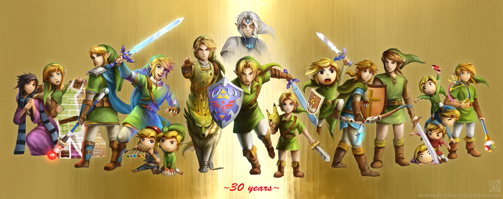

The Legend of Zelda (Zeruda no Densetsu) es una serie de videojuegos de acción-aventura creada por los diseñadores japoneses Shigeru Miyamoto y Takashi Tezuka, y desarrollada por Nintendo, empresa que también se encarga de su distribución internacional. Su trama por lo general describe las heroicas aventuras del joven guerrero Link, que debe enfrentarse a peligros y resolver acertijos para ayudar a la Princesa Zelda a derrotar a Ganondorf y salvar su hogar, el reino de Hyrule.
A partir del lanzamiento del primer juego en 1986, The Legend of Zelda ha logrado una notable popularidad acompañada de críticas favorables en la industria de los videojuegos, traducidas en un cuantioso éxito comercial a nivel internacional —hasta abril de 2020 se calculan más de 113 millones de copias vendidas de sus juegos; para las ventas específicas de cada título de la franquicia, véase la sección Comercial—.
La continuidad cronológica de la trama de los juegos ha sido objeto de debate con el paso del tiempo. Algunos de sus seguidores y expertos de la industria cuestionaban la cronología, al no poder hallar vínculos entre algunos títulos. Finalmente, en 2011 apareció publicada la cronología oficial de la serie en el libro Hyrule Historia, en donde se explica que The Legend of Zelda cuenta con tres líneas de tiempo diferentes.
En un principio, Nintendo no consideraba que el videojuego de Miyamoto y Tezuka fuera a alcanzar notoriedad en el mercado japonés, aunque poco después se convenció de su impacto. En 1987 el primer juego había logrado vender un millón de copias y, tras su distribución en otros países, se comercializaron tres millones de copias más. Esto ayudó a incrementar el número de ventas de la consola Nintendo NES, la primera fabricada por Nintendo. Con el transcurso del tiempo, la serie ha obtenido numerosas críticas positivas en la industria de los videojuegos. Así, la prestigiosa revista japonesa Famitsu destacó a Ocarina of Time, The Wind Waker, Skyward Sword y Breath of the Wild como «juegos perfectos», mientras que la mayoría de los otros títulos fueron reconocidos como los mejores estrenos en sus respectivos años de lanzamiento, como en el caso de A Link to the Past —considerado por Game Rankings como el segundo mejor juego de 1992 para la plataforma Super Nintendo— y Twilight Princess —considerado como el «mejor juego» de 2006 por el sitio web Game Informer—.
La franquicia de The Legend of Zelda incluye una serie animada de televisión transmitida en 1989, así como numerosos mangas, novelas y libros publicados bajo la licencia de Nintendo, aunque ninguno de estos se consideran canónicos.